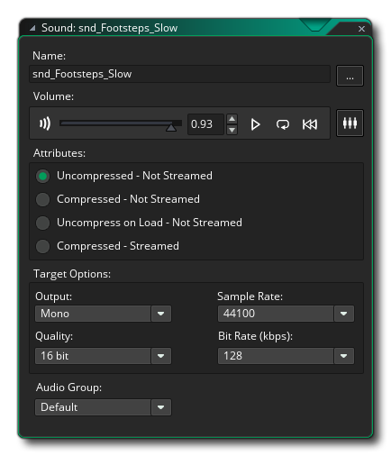

Todos los juegos deben tener efectos de sonido, y la mayoría también tienen música, lo que significa que debes poder agregarlos a tu juego en GameMaker Studio 2. Esto se hace a través del Editor de sonido, que se abre cada vez que crea un nuevo Recurso de sonido. 
Los sonidos en GameMaker Studio 2 se pueden descomprimir o comprimir, y los sonidos comprimidos tienen opciones adicionales sobre cómo lidiar con ellos en tiempo de ejecución. Los sonidos no comprimidos son aquellos que se han guardado como WAV archivos de formato, mientras que los sonidos comprimidos pueden ser MP3 o OGG formato. En general, querrás pequeños efectos de sonido WAV y efectos más grandes o música para ser MP3 o OGG. Al igual que con los otros recursos diferentes, se recomienda que nombre sus sonidos usando un prefijo apropiado como "snd_" para que pueda identificarlo fácilmente más adelante.
Agregar un sonido es tan simple como hacer clic en el botón Agregar sonido y luego navegar en el explorador de archivos que se abre en el archivo que desea usar. Una vez que haya seleccionado uno y lo haya cargado, puede obtener una vista previa de él con los controles de reproducción que se muestran, así como cambiar ciertos atributos de cómo se debe exportar el archivo. si no está seguro de esto, simplemente deje todo "tal como está", aunque si está agregando música o MP3 formato de sonido, probablemente debería cambiar al formato Comprimido - No transmitido. Puede encontrar más información sobre el editor de sonido aquí.
Tenga en cuenta que los sonidos ocupan mucho espacio en el disco, por lo que debe tener cuidado al crearlos para sus proyectos de juegos. ¿Realmente necesitas un efecto de sonido de 48 KHz que solo se reproduzca durante una fracción de segundo? Probablemente no sea así, piense en reducir la frecuencia de muestreo aquí a 11025 o 22050 para efectos, y para cosas más largas como la música o para efectos de bucle, piense también sobre el uso de un formato comprimido. Tenga en cuenta también que si planea usar efectos de audio posicionales en 3D, entonces el archivo de sonido inicial debe ser mono.
Puede cerrar el editor de sonido ahora y podemos pasar a crear Objetos...